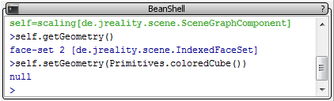

The BeanShell Plug-in
The BeanShell lets you invoke java code from within the running application. The variable "self" contains the active selection of the scene graph navigator. In this example the geometry of the selected node is set to a colored cube.